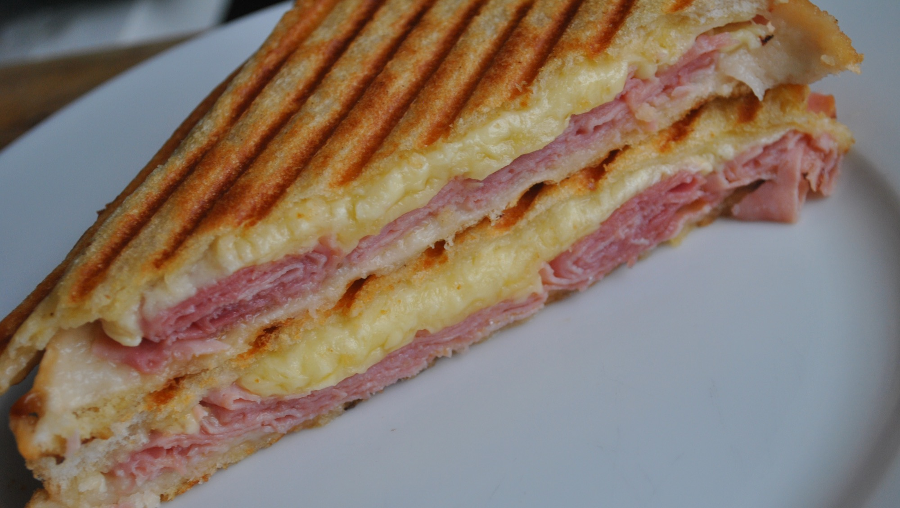

Ham and Cheese Toastie Recipe

Description:
A ham and cheese toastie is a delightful comfort food classic, featuring layers of savory ham and gooey melted cheese sandwiched between slices of crispy toasted bread.
With its warm, melty center and satisfying crunch, it's a simple yet irresistible treat for any time of day.
Ingredients:
- Sliced ham
- Sliced cheese (cheddar, Swiss, or your favorite variety)
- Bread slices (white, whole wheat, or sourdough)
- Butter
- Optional: mustard, mayonnaise, or other condiments
Steps:
- Heat a skillet or pan over medium heat.
- Spread butter on one side of each bread slice.
- Place one slice of bread, buttered side down, on the skillet.
- Layer sliced cheese and ham on top of the bread slice.
- Place another slice of bread, buttered side up, on top of the ham and cheese.
- Cook until the bottom slice of bread is golden brown and the cheese begins to melt, approximately 2-3 minutes.
- Carefully flip the toastie with a spatula and cook the other side until golden brown and the cheese is fully melted.
- Once both sides are golden and the cheese is melted, remove the toastie from the skillet.
- Let it cool for a moment before slicing it diagonally and serving hot.
- Enjoy your delicious ham and cheese toastie as a comforting snack or meal!